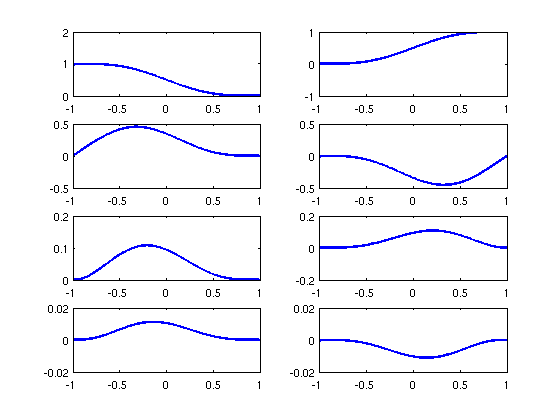
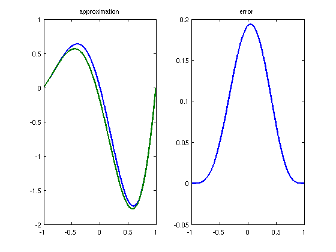
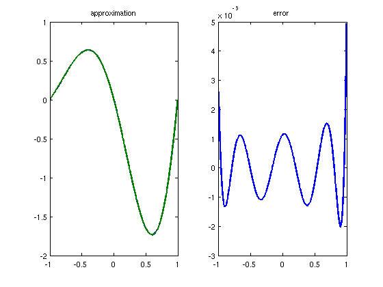

Polynomial basis for Hermite interpolation
Pedro Gonnet, September 2010
(Chebfun example approx/HermiteBasis.m)
This script shows how one can use Chebfun to compute a polynomial basis for Hermite interpolation. By Hermite interpolation here we mean approximating a function f by polynomials that interpolate f and a specified number of its derivatives at the endpoints.
For simplicity, we will assume that everything is computed on the interval [-1,1].
d = domain(-1,1);
To evaluate our function on this domain at the endpoints, we can create a basic linop which, when applied to a chebfun, evaluates it at the nodes -1 and 1.
I = eye(d);
L = [];
L{1} = I([1 end],:);
By differentiating this operator, we can construct operators that compute the first k derivatives at the nodes -1 and 1.
k = 3; D = diff(d); for i=2:k+1 L{i} = L{i-1} * D; end;
If we interpolate k derivatives at -1 and 1, our basis will be of degree 2*k+1. To construct this basis, we evaluate the linops at the 2*k+2 Chebyshev nodes and assemble a (2*k+2)x(2*k+2) matrix
M = []; for i=1:k+1 M = [ M ; L{i}(2*k+2) ]; end;
and solve for the unit matrix
V = M \ eye(2*k+2);
The columns of the matrix V now contain the basis polynomials evaluated at the 2*k+2 Chebyshev points. We can recover the basis as Chebfuns by applying the Chebfun constructor to each column.
B = []; for i=1:2*k+2 B = [ B , chebfun( V(:,i) ) ]; end;
We can plot the individual basis functions as
for i=1:2*k+2 subplot(k+1,2,i); plot( B(:,i) , 'LineWidth' , 2 ); end;
This basis can now be used to construct a Hermite interpolant of any function from the function values and derivatives at the interval edges.
f = chebfun( @(x) exp(x).*sin(pi*(x+1)) ); df = diff(f); ddf = diff(df); dddf = diff(ddf); b = [ f(-1) ; f(1) ; df(-1) ; df(1) ; ddf(-1) ; ddf(1) ; dddf(-1) ; dddf(1) ]; h = B * b figure subplot(1,2,1); plot( [ f , h ] , 'LineWidth' , 2 ); title('approximation'); subplot(1,2,2); plot( [ f - h ] , 'LineWidth' , 2 ); title('error');
h =
chebfun column (1 smooth piece)
interval length endpoint values
[ -1, 1] 8 -3.4e-15 -6.7e-16
vertical scale = 1.8
 Conversely, we can find the function values and derivatives that would match the original function best in the least-squares sense by computing
b = B \ f; h = B * b; figure subplot(1,2,1); plot( [ f , h ] , 'LineWidth' , 2 ); title('approximation'); subplot(1,2,2); plot( [ f - h ] , 'LineWidth' , 2 ); title('error');